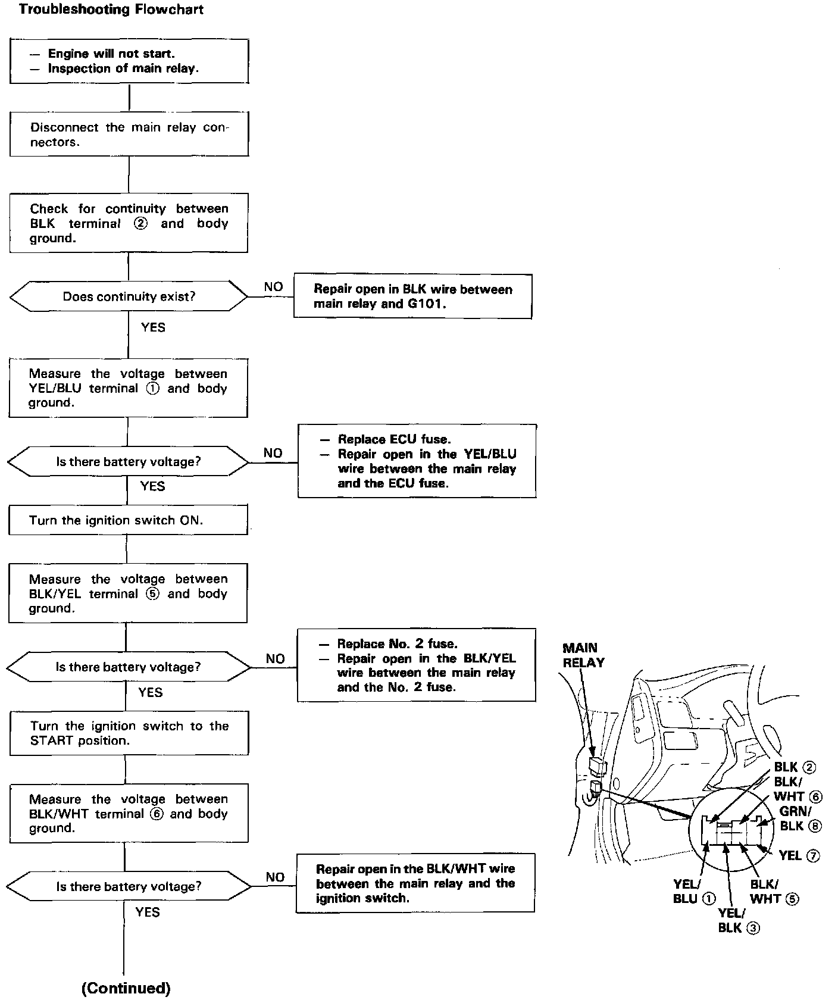
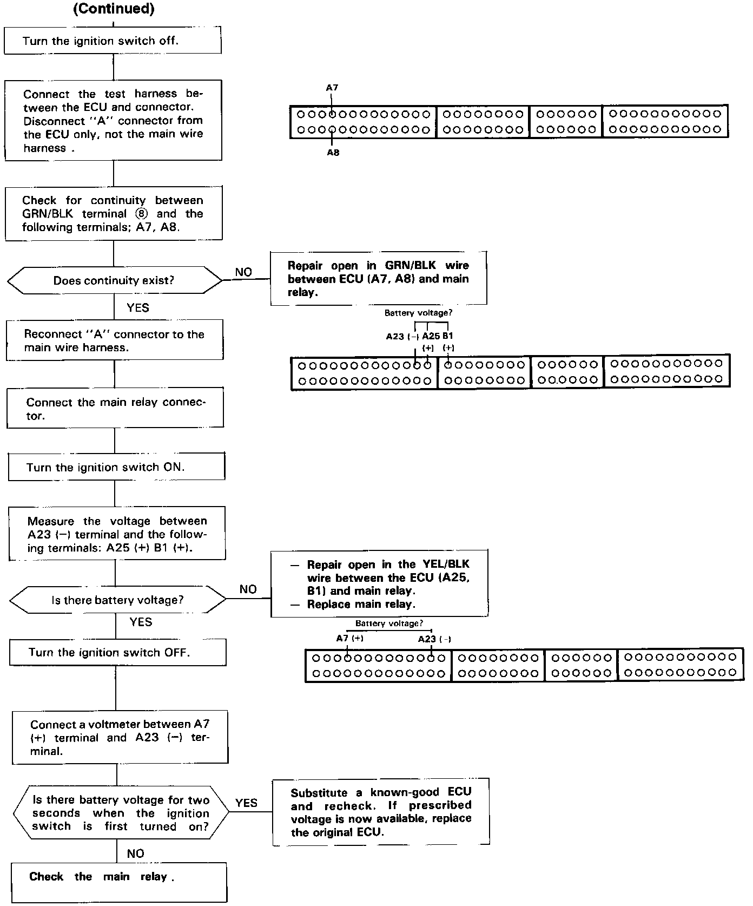

Operation CHARM
: Car repair manuals for everyone.
Home
>>
Acura
>>
1992
>>
Vigor L5-2451cc 2.5L SOHC G25A4 FI
>>
Repair and Diagnosis
>>
Relays and Modules
>>
Relays and Modules - Powertrain Management
>>
Relays and Modules - Computers and Control Systems
>>
Main Relay (Computer/Fuel System)
>>
Testing and Inspection
>>
Main Relay Harness Test
Main Relay Harness Test

